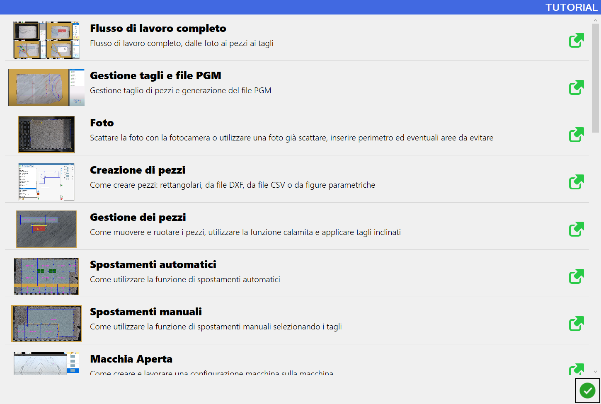

In this window the operator can change some parameters linked to the working.

Section left
Receding of interior Cuts | The minimum distance of the disk approaching the piece for the interior cuts. |
Distance on magnet | Distance between two pieces before magnet activates. |
Increase inside bench | Tool penetration depth in bench. |
Increase inside bench - inclined | Depth of drilling of the tool in the bench. Only for isoparametric mode. |
Textbox GO TO | Default value for GO TO to order the lists. |
Offset Slab Move | Additional quota for the move functionality. |
Max radius Hole | For the dxf import, maximum radius because a circle will be imported as a hole. |
Overlay on drip system | The percentage of drip system overlay, from 99% to 0%. |
Drip System speed | The percentage of the drip system speed compared to the speed of normal cuts. |
Penetration holes | Set the penetration of all holes, set to 0 for the through hole. |
Penetration internal Cuts | Set the penetration of all interior cuts, set to 0 for through cut. |
Automatic holes distance | Indicate the distance between one hole and the other in the insertion of multiple holes. |
Holes number | Holes number to use for the holes on corner. |
Operations
Active Operation | Allows to create a custom operation on cut. |
Customized Operations |
Camera section
Use Camera | It is enabled the use of the Camera or the operator chooses the image from file. |
Machine controls section
Activate/Deactivate quota control | |
Acquisition bench quote | |
Zero setting axes |
File name section
Incremental | Increase the ISO file name, 100, 101, 102… |
Input user | The user can enter the file name. |
Fixed | Fixed iso file name, insert the desired name in the adjacent field. |
Fixed _ Incremental | File name of iso in fixed incremental format type File_101. |
Time Data | File name of iso in date time format 20191206_080124. |
File Name | The ISO file takes the name of the file (DXF or CSV) imported. |
File Name _ Incremental | The ISO file takes the name of the imported file (DXF or CSV) with the addition of an incremental value. |
Color name section
Black | Text of the piece black. |
Yellow | Piece text yellow. |
Fuchsia | Piece text fuchsia. |
Other buttons
Check tool dimension at start of the program | If activated, it allows to enter a probe cycle at the beginning of the cutting program when going to the cut management screen. |
Tutorial | It allows to access to the video tutorials of Parametrix. |
Activate/Deactivate PGM |
Tutorial
Inside this window are present tutorials that show how to use some functions of Parametrix.
To see the video you want, press on the corresponding row.
